Съездив на Notodden Bluesfest в прошлом году, я был сильно обрадован музыкой, но расстроен потраченной суммой. Тяга к прекрасному заставила найти удобный альтернативный способ. Собственно с этого все и началось.
Первооткрыватель данного крупнейшего норвежского фестиваля Федор Романенко разработал свой
метод посещения фестиваля, который опубликован на сайте www.blues.ru. Метод хороший, однако
весьма дорогой, и самые его дорогие моменты это: авиабилеты, автобусы, гостиница. По собственному
опыту могу сказать, что сумма приближается к $1300-1500 на одного человека за поездку.
Раздав в прошлом году долги, я задумался над альтернативой и уже весной у нас созрел точный
план посещения фестиваля.
Методика эконом-варианта посещения фестиваля
Начинается все с покупки билетов на концерты. Продаваться они начинают за 3 месяца до фестиваля, то есть в начале мая, так как сам фестиваль всегда в августе. Вся информация о выступающих и полное расписание появляются в тоже время на сайте www.bluesfest.no Самый большой недостаток сайта в том, что он исключительно на норвежском, однако обладая воображением многое можно расшифровать. Билеты продаются на каждый концерт отдельно. Покупать их стоит заранее, так как в дни фестиваля на многие самые популярные мероприятия билетов уже может не быть. Стоимость билетов на дневные концерты около $20, на вечерние около $50. На каждом таком концерте выступает 2-3 исполнителя, играя по 1.5-2 часа каждый.
После закупки билетов следует задуматься о транспорте, проживании и визе. Наш способ заключался в следующем: Едем на машине из Питера, живем в кемпинге в палатке. Однако чтобы удобно пожить в палатке не за 2-3 километра от города, место под эту палатку надо также заранее зарезервировать. Я это сделал, просто позвонив в офис фестиваля. Они же прислали мне факс о резервировании места в bluescamp, что служит аналогом приглашения и резервирования гостиницы для посольства. Дополнительно к этому посольство попросило подробный план нашей поездки, который было также несложно написать.
Чтобы не ехать очень долго на машине и не тратить бензин стоимостью 1.1 евро за литр, мы купили билеты на паром из Хельсинки в Стокгольм и обратно. Все эти билеты можно купить заранее на сайте www.paromy.ru. Так же надо помнить, что сама машина может быть только с заводской тонировкой, и вы должны быть уверены, что она проедет 2200 км (полный километраж от Питера). Через границу стоит провезти одну канистру отечественного бензина.
К решению вопроса проживания надо добавить наличие хорошей палатки, спальников и ковриков. В bluescamp есть туалеты, питьевая вода, умывальники и душ, а также электрические розетки 220 вольт.
Другой важный момент - это еда. Еда в Норвегии очень дорогая, а если питаться на самом фестивале, только самодельными гамбургерами по цене $8-10 за штуку. Поэтому вопрос был решен погрузкой банок тушенки, гречки, макарон и пр. продуктов, к которым была приложена великолепная шведская газовая горелка и баллоны. Хотя ввоз продуктов питания в любую страну ограничен, а Скандинавию все мясомолочные продукты ввозить вообще нельзя, однако этого никто не проверяет, если это сильно не выпячивать. Таким образом, вопрос основного питания был решен за очень небольшую сумму.
Все основные расходы на одного человека
| Билеты на концерты | $150 |
| Паром туда и обратно | $100 |
| Бензин (зависит от расхода) | $30 |
| Еда | $20 |
| Кемпинг | $50 |
Разумеется, к этим расходам прибавиться еще некоторое количество мелочей. Так или иначе, в этом году у нас получилось 850 на двоих. Что почти в три раза меньше способа с самолетом ($500) и гостиницами ($50 в сутки). Вот это собственно сам метод для всех желающих. Не такие большие расходы за такой большой праздник.
Поехали!
Нас было четверо - Я, Марина, Данила и Вася. Загрузив в багажник все необходимое, включая акустическую гитару, мы бодро покатили к Российско-Финской границе. Пересечение самой границы ознаменовалось ровным асфальтом и четкой разметкой и культурным дорожным движением. Надо сказать, что все скандинавы, превышают разрешенную скорость не более чем на 10-20 км/ч, а также обычно хорошо помнят все камеры с радарами на дороге. Не обладая таким полным культурологическим ощущением местного дорожного движения, мы всегда ездили, только руководствуясь дорожными знаками.
Где-то за 100 километров до Хельсинки я первый раз в жизни сел за правый руль и неожиданно для всех въехал прямо в город, и далее под вопли "Поворачивай! ... Где этот знак кораблик со стрелочкой? ... Не прижимайся так сильно влево! ... Здесь был запрещен разворот!" ловко подъехал к нашему парому Gabriella компании Viking-Line. Обнаружив несколько полос для очереди машин на погрузку и знак "Checkin starts at 16.00" мы оставили машину на полосе и пошли погулять в город.
|
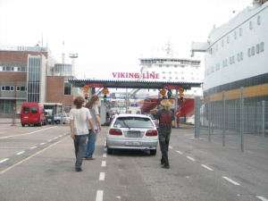 |
Центр Хельсинки не произвел никакого особого впечатления, так как я уже видел много европейских городов, однако все было вполне симпатично, даже отбойные молотки рабочих звучали не так противно как обычно. Нагулявшись по городу, мы вернулись к машине в 15.30 и обнаружили что вывески со временем начала регистрации уже нет, а все остальные машины уже уехали вперед, оставив нашу в гордом одиночестве посреди дороги. Пообещав больше никогда не путать очередь с парковкой, мы закатились внутрь парома, вылезли из машины и отыскали свою каюту ниже ватерлинии. Несмотря на глубинность, каюта была вполне удобная - с туалетом, душем, розеткой и шипящим финским радио.
Паром оказался 11этажным плавучим зданием с супермаркетом, ресторанами, и ночными клубами. Сразу после погрузки жизнь на нем закипела с дикой силой как на центральной улице какого-то города. Немного посмотрев на этот праздник, мы пошли в каюту с четким намерением не проспать оплаченный завтрак.
На стене каюты был обнаружен встроенный будильник, который, исходя из текста, на нем написанного, мог разбудить всех обитателей каюты за заданное время до прибытия в Стокгольм. Прикинув, что за 2 часа будет самое то, я настроил будильник, и все залегли спать. Будильник превзошел все ожидания и сработал за 2 часа до начала завтрака и за 4 до прибытия… ровно в 6 часов утра. Встретившись у закрытого ресторана с такими же умными японскими туристами, мы еще два часа медитативно изучали проплывающие мимо пустынные шведские берега.
Компенсировав недостаток сна невероятным количеством еды на шведском столе, мы выкатились в Стокгольм, попетляв по центру поставили машину на тихой улице и несколько часов походили по городу.
После прогулки Данила сел за руль, я за карту и силой интуиции и чувством направления начал выводить нас на необходимую трассу E18. Сделав три почетных круга по городу, мы достигли успеха и устремились в сторону Норвегии. Расстояние от Стокгольма до Осло всего около 550 километров, однако, много ограничений, камер и крутых поворотов. Только к вечеру мы достигли границы Норвегии и заночевали в кемпинге c примечательным названием "Sukken Kamping".
Проснулись мы рано утром и уже часов в 11 были в Осло. Осло - это приятный небольшой город с красивой крепостью, улицами и центром блюза Норвегии - клубом "Muddy Waters". Нагулявшись по городу и лично удостоверившись в том, что рабочие закапывают под асфальт трубки для зимнего подогрева улиц, мы направились в Нотодден.
|
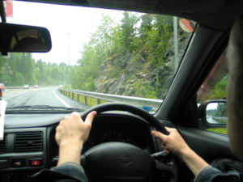 |
От Осло до Нотоддена около 80 километров, значительная часть которых являет собой узкую виляющую дорогу с постоянным подъемом или спуском. Данила жестко выкручивал руль и принципиально соблюдал правила дорожного движения, чем вызвал явное недовольство местных водителей. Уже через небольшое время за нами ехала вереница машин из 10. Не имея возможности обогнать нас на узкой дороге и не имея наглости требовать от нас нарушения правил, они уныло тащились сзади и видимо думали о непонятных русских, которые не любят быстрой езды.
В Нотоддене было сухо, и у каждого газона стоял человек в куртке "Security", дабы пускать ставить палатку только тех, кто это газон заранее зарезервировал. Немного прошвырнувшись по городу, мы нашли наш "bluescamp", где была записана моя фамилия и поставили палатку в весьма приятном месте рядом с местными любителями кемпингов и музыки.
Надо сказать, что кемпинг это очень примечательное место, где собирается множество разных людей, объединяет их только желание повеселиться и послушать музыку, но даже в блюзе у них зачастую разные предпочтения. Некоторые приезжают на огромных домах на колесах, некоторые привозят
|
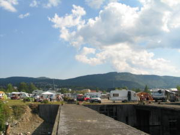 |
День Первый
Немного поспав после ночной дискотеки, мы вдохнули свежий воздух, поели и пошли на открытие фестиваля. На открытие фестиваля вход бесплатный, само открытие ведет известный норвежский радиоведущий. Открытие включает в себя пламенные речи, вручение Blues приза и небольшие,
|
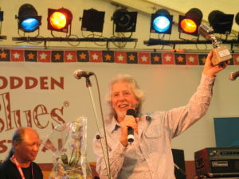 |
Также на сцену вышли Видар Бюск и Амунд Марюд и акустическим дуэтом исполнили одну песню под громкие крики своих фанатов. С группой JT Lauritsen & The Buchshot Hunters на сцену вышел известный нам Кид Андерсен, в качестве второго гитариста. Но те небольшие фразы, что он вставлял, были очень приятными. Сам JT Lauritsen пел весьма неслабо. Норвежский исполнитель Knut Buen
|
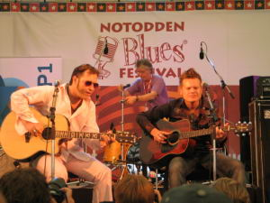 |
Ко всему прочему на сцену вышла группа The British Bluesmasters, состоящая из музыкантов британского блюзового бума конца 60х. По правде говоря, они конечно хорошие ребята, но было ощущение что группа несколько случайная, собранная для возможности ну еще надо б как то поиграть и заработать. Сама музыка была именно таким оригинальным британским блюз-роком. Самое грустное, это стоящий на сцене Питер Грин, которому, казалось, было уже давно все фиолетово. Даже соло он играть ни одного не захотел, хотя другие два гитариста напилились в свое удовольствие. Под занавес открытия на сцену снова вышли Бюск с Марюдом и очень бодро сыграли песню "I Came Here To Rock".
Первый концерт фестиваля начинался через пару часов после открытия и включал в себя совместное выступления Бюска с Марюдом. Хэдлайнером первого фестивального дня выступил Эрик Сардинас.
Пробравшись вплотную к сцене, мы приготовились вкусить музыки, в то время когда большинство местных ловко занимало места за столиками, чтоб попить побольше пива. Но когда дело подошло к началу концерта, то все пространство у самой большой сцены фестиваля было плотно забито.
|
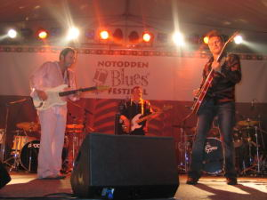 |
|
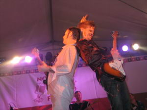 |
Вообщем, вся публика была на взводе с самого начала до самого конца. Бюска питала энергетика Марюда, Марюда энергетика Бюска и вся публика тащилась по полной программе. Вообщем мне было так хорошо, что я сразу отошел подальше, когда концерт закончился. Ибо разбавлять такие высокие (хе-хе) чувства тяжелым роком - не очень то хотелось.
Так что Ерика Сардинаса слушал издали. Данила с Васей остались слушать его у самой сцены и, по этой причине, потом жаловались, что их как катком переехало. На самом деле Сардинас конечно
|
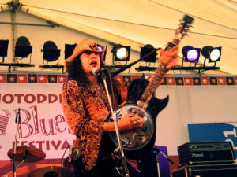 |
Когда дело пошло к концу, мы пошли спать. По местному времени было 3 часа ночи. По московскому 5. В эту ночь фанатов громкой музыки было уже гораздо меньше. Видимо Сардинас всем дал прикурить в этом отношении.
День Второй
Утром стало жарко. И такая погода продержалась уже до самого конца. И это был отличный повод воспользоваться чистейшей речкой протекавшей в 5 метрах от палатки. В то время как мы просто культурно купались, местные жители ныряли в воду с бутылкой шампуня в руках, усердно мылись и
|
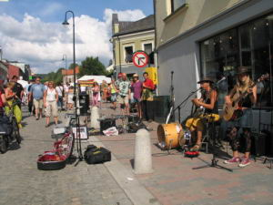 |
На улицах было полно народу, в каждом углу играла музыка, в каждом заведении играла какая-нибудь группа, просто так, без объявления в общей афише фестиваля. На улице играли профессиональные уличные блюзовые музыканты. Музыкальный магазин выставил гитары и все остальное прямо на улицу. Продавались компакты, двд, игрушечные гитары и все на свете. Жизнь кипела по полной программе.
Под вечер, окончательно расслабившись, Данила начал запевать на берегу реки, я тоже немного попел. В результате к нам начали подползать норвежские фанаты блюза, уговаривая нас попеть на их пьянке у соседней палатки. Не успели мы им объяснить, что вот-вот уже уходим на концерт, как тут пришел очень прикольный чувак с чемоданом гармошек и сказал - "Привет музыкальный народ,
|
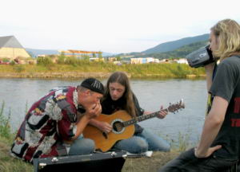 |
Затем мы разошлись на концерты. Концертов в этот дело было много, мы выбрали сходить послушать Рода Пьяцу и играющего перед ним Свена Зеттерберга. С группой Зеттерберга выступил достаточно известный норвежский исполнитель Knut Reiersrud. Он пел и играл на гитаре. Блюз в его музыке безусловно присутствовал, но еще больше было джаз-роковых и психоделических ухищрений.
|
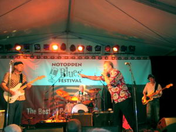 |
После пары таких бурных вещей к концерту присоединился Sven Zetterberg, он играл на гитаре в более менее классической чикагской манере. Также играл на гармошке. Очень хорошо пел, голос у него отличный. Но дело как-то не пошло, то ли что-то ему мешало, толи просто не перло в этот раз, хотя на альбомах он звучит здорово. Вообщем концерт вышел такой конечно серьезный, но несколько загадочный. Ко всему прочему почему-то очень резко звучали обе гитары.
После шведских героев, на сцену сразу вышел сам Род Пьяца и без особого пафоса стал сам лично настраивать свои комбики и свой микрофон. Меня это даже несколько удивило. Затем начался концерт.
|
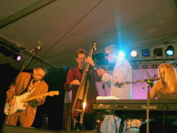 |
|
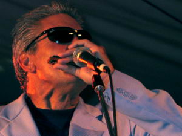 |
Сам Род играл и пел очень хорошо, но было ощущение, что он немного халявит. Толи устал, то ли еще что, но он уходил со сцены, заставлял играть свою жену длиннющее соло, петь остальных. Так что было здорово, но и немного как-то обидно, что Род не выкладывается как это обычно слышно на дисках, причем и концертных тоже. Спел одну песню и Билл Стьюв - басист. Надо сказать последний мне очень нравится, и альбом у него тоже классный. Когда я с ним пообщался, он сказал, что уже делает новый диск. Так что на второй день мы отправились спать в разных противоречивых чувствах.
День Третий
|
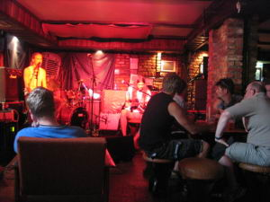 |
На третий день стало еще жарче. Купаться стали еще больше. Уже в 12 часов пошли в клуб Bellman, где по программке как раз начинался джем. Клуб был великолепен - в нем работал кондиционер и был отличный звук. Мы с Данилой пару вещей сыграли вдвоем, затем позвали местную римт-секцию и еще поиграли. Все было очень неплохо. Мы остались довольны - слушающий народ тоже. Закончив таким образом утреннюю зарядку, мы пошли на сцену у причала, где под палящим солнцем собралось очень много народу чтобы послушать еще побольше музыки.
Первой играла норвежская группа Big Bang. К блюзу она не имела никакого отношения - это был такой молодежный поп-пост-панк-рок. Гитарист использовал целую кучу разных гитар и явно имел в большую толпу молодых фанатов среди публики. Молодежи на этом концерте было в 10 раз больше чем на любом другом. После того как Big Bang закончили свое выступление общеизвестными локальными хитами, на сцене началось Kim Wilson Show. Молодые фанаты удалились, к сцене приблизились более взрослые фанаты Кима Вилсона.
Kim Wilson Show - это блюзовое выступление Кима отдельно от The Fabulous Thunderbirds. И он нас потряс. Невероятная сила и драйв, невероятная, мощная игра на гармонике и великолепный вокал.
|
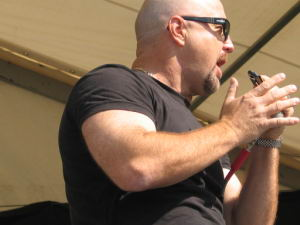 |
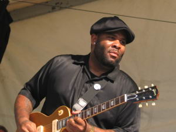 |
Я слышал все его диски, видео и еще много, но такой силы я не ожидал. Это сложно описать, но он играл очень честно, прямо от души и потому задевал и очень и очень глубоко. Для меня, например, это и есть самое главное в музыке. С Кимом играл очень хороший черный гитарист Kirk Fletcher. Он играл просто и не выпендриваясь, именно постоянно помогал лидеру, но играл очень и очень хорошо, очень и очень глубоко. Короче говоря - очень здорово.
Было очень жарко, security раздавали публике большие пластиковые стаканы с водой, дежурила скорая, на случай внезапных перегревов. Мы тоже успешно погорели на солнце.
|
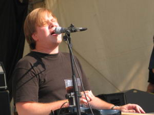 |
После Кима Вилсона начал играть очень хорошо известный у нас и в мире слепой гитарист из Канады - Jeff Healey. Он действительно очень здорово и уникально играет на гитаре и очень хорошо поет. Музыка - это такой классический блюз-рок. Немного послушав, мы поняли, что уже устаем и сильно перегреваемся и пошли купаться. Рядом с нашей палаткой музыку было слышно почти также хорошо, как и у сцены. Так что я плавал в речке, продолжая слушать живое выступление легенды и ловя кайф от уникального стечения обстоятельств. Прямо скажем - не в каждый жаркий день можно купаться в реке и одновременно вживую слушать такую музыку.
Проведя таким образом день, и немного отдохнув мы пошли на вечерний концерт, выбрав для себя Vidar Busk и The Fabulous Thunderbirds. Начинал концерт Видар Бюск. В этот раз он выступил с клавишами, духовой секцией, чуваком с семплером и ритмгитарой. Началось все с неожиданной забойной фанковой вещи приближающейся по стилю к Хендриксу. Затем была великолепно исполненная вещь Джимми Вона - Dirty Girl. По завершению этой вступительной части Видар перешел к вещам
|
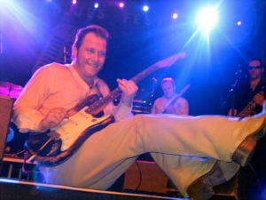 |
После Бюска на сцену вышли The Fabulous Thunderbirds, отличающиеся от Kim Wilson Show пианистом, другим барабанщиком и забойным ритм-блюзовым репертуаром. Энергия концерта сотрясала большое здание, где происходил концерт. Свежий воздух стремительно кончался. Композиция "We Gonna Rock This House Tonigh" полностью соответствовала действительности. Рядом со сценой народ
|
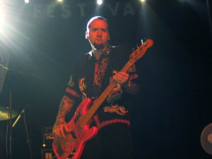 |
Третий день фестиваля для нас прошел явно не зря. Столько хорошей музыки и новых впечатлений давно уже не было.
День последний
Четвертый день - день закрытия фестиваля. Мы проснулись и неспешно пошли к главной сцене на данное мероприятие. Народу было уже меньше. Кемпинг потихоньку начал разъезжаться. Не далеко от нас еще в первый день мы обнаружили занимательную табличку "Alcotest" и трактовали ее наличие следующим: Например, едет пьяный норвег на машине, ему становится стыдно, он заезжает на данный алкотест и добровольно лишается прав на веки вечные. Но оказалось
|
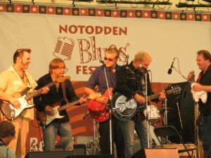 |
У главной сцены поставили скамейки, народ сидел, расслаблялся и пил водичку. Началось все с джема на тему рокеннрола. Местные известные рокеннрольщики, а также Видар Бюск и Кид Андерсен по очереди выходили на сцену и исполняли песни одну за другой. Все проходило весьма по-раздолбайски, но особого напряжения не вызывало. А кое-что было и очень неплохо. Общий тусняк с кучей гитаристов, конечно, был только визуально приколен, но очень скоро все компенсировалось по полной программе.
|
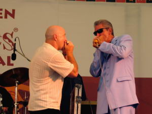 |
Завершал концерт совместный концерт Рода Пьяцы и Кима Вилсона. И это было очень здорово. Много великолепных медленных вещей. Например BlackNight. По очереди пели и играли, аккомпанировали и солировали. Сложно описать, но это как раз и был "real blues". Рядом с энергией Кима, Род совершенно не халявил, а наоборот очень и очень сильно выкладывался. Незабываемый уникальный концерт. Навряд ли такое часто бывает. Мгновенно прошла грустная мысль о том, что Рода Пьяцу мы как следует не послушали. Тут уж он поиграл по настоящему. Более чем достойное завершение фестиваля.
На этом фестиваль закончился. Так как в Нотоддене все мощные концерты проходят одновременно, и билеты на эти концерты весьма дорогие, то мы выбирали то, что нам очень хочется послушать, и не послушали достаточно многих хороших исполнителей, игравших в то же самое время. Может это будет кощунственно, но я не сильно переживал оттого, что не попал на концерт Джона Майла. Я его, конечно, очень сильно уважаю, но это не та музыка, которую я люблю. И посмотрев недавно его поздний концерт, я заранее не собирался идти его слушать. Очень интересно было бы послушать, что сейчас сольно играет Амунд Марюд. Жаль, что не сходили на концерт Кида Андерсена в небольшом клубе. Не послушали Эйрика Бергне. Было б интересно посмотреть на сумасшедшую группу The John Spencer Blues Explosion. Но такое правило Нотодденского фестиваля. Или бегай между концертами или слушай что-то от начала до конца. По эстетическим и экономическим соображениям мы выбрали второе. Собственно сильно не жалеем. Обязательно поедем еще.
Возвращение
На обратном пути из Нотоддена мы заглянули в небольшой южный фиорд, проехали в гигантском тоннеле под заливом города Осло, доехали до Стокгольма, заехали на паром и уже следующей ночью были в Москве. Осталось море отличных фотографий сделанных Мариной. Общие ощущения отличные. Восприятие расширилось, жить стало веселей. Появилось желание менять себя и мир вокруг. Думаю это только к лучшему.
Все фотографии с фестиваля: http://www.bluescats.ru/files/notodden2004.
Владимир Русинов. www.bluescats.ru 2004 г.
Комментарии и отзывы можно писать Тут.